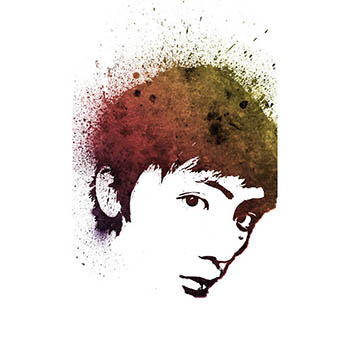
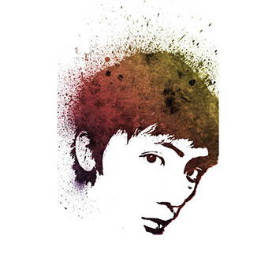
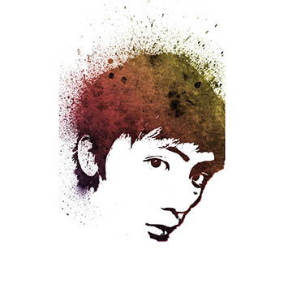
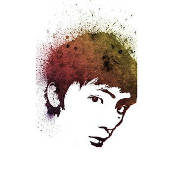

Hello! I am a senior design student studying at Simon Fraser University in the School of Interactive Arts and Technology. UI/UX design is what brought me into this field and I love exploring new things with emerging technologies. Being a UI/UX designer gives me an opportunity to develop interfaces for next generation mobile devices. With the love for UI/UX design, I recently started my study in mobile computing which helps me create actual applications implementing my interface design.
*DOWNLOAD MY RESUME